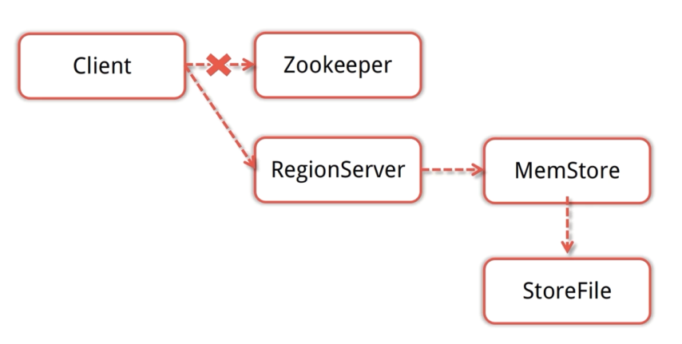

5.6 HBase组件
1 HBase 基础架构

Client
- ①与zookeeper通信, 找到数据入口地址
- ②使用HBase RPC机制与HMaster和HRegionServer进行通信；
- ③Client与HMaster进行通信进行管理类操作；
- ④Client与HRegionServer进行数据读写类操作。
Zookeeper
- ①保证任何时候，集群中只有一个running master，避免单点问题；
- ②存贮所有Region的寻址入口，包括-ROOT-表地址、HMaster地址；
- ③实时监控Region Server的状态，将Region server的上线和下线信息，实时通知给Master；
- ④存储Hbase的schema，包括有哪些table，每个table有哪些column family。
HMaster
可以启动多个HMaster，通过Zookeeper的Master Election机制保证总有一个Master运行。
角色功能：
- ①为Region server分配region；
- ②负责region server的负载均衡；
- ③发现失效的region serve并重新分配其上的region；
- ④HDFS上的垃圾文件回收；
- ⑤处理用户对表的增删改查操作。
HRegionServer
HBase中最核心的模块，主要负责响应用户I/O请求，向HDFS文件系统中读写数据。
作用：
- ①维护Master分配给它的region，处理对这些region的IO请求；
- ②负责切分在运行过程中变得过大的region。
- 此外，HRegionServer管理一系列HRegion对象，每个HRegion对应Table中一个Region，HRegion由多个HStore组成，每个HStore对应Table中一个Column Family的存储，Column Family就是一个集中的存储单元，故将具有相同IO特性的Column放在一个Column Family会更高效。
HStore
- HBase存储的核心，由MemStore和StoreFile组成。

- 用户写入数据的流程为：client访问ZK, ZK返回RegionServer地址-> client访问RegionServer写入数据 -> 数据存入MemStore，一直到MemStore满 -> Flush成StoreFile
HRegion
- 一个表最开始存储的时候，是一个region。
- 一个Region中会有个多个store，每个store用来存储一个列簇。如果只有一个column family，就只有一个store。
- region会随着插入的数据越来越多，会进行拆分。默认大小是10G一个。
HLog
- 在分布式系统环境中，无法避免系统出错或者宕机，一旦HRegionServer意外退出，MemStore中的内存数据就会丢失，引入HLog就是防止这种情况。
2 HBase模块协作
- HBase启动
- HMaster启动, 注册到Zookeeper, 等待RegionServer汇报
- RegionServer注册到Zookeeper, 并向HMaster汇报
- 对各个RegionServer(包括失效的)的数据进行整理, 分配Region和meta信息
- RegionServer失效
- HMaster将失效RegionServer上的Region分配到其他节点
- HMaster更新hbase: meta 表以保证数据正常访问
- HMaster失效
- 处于Backup状态的其他HMaster节点推选出一个转为Active状态
- 数据能正常读写, 但是不能创建删除表, 也不能更改表结构